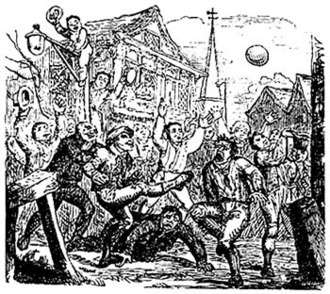
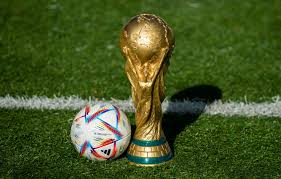

Football is a family of team sports that involve, to varying degrees, kicking a ball to score a goal. Unqualified, the word football normally means the form of football that is the most popular where the word is used. Sports commonly called football include association football (known as soccer in Australia, Canada, South Africa, the United States, and sometimes in Ireland and New Zealand); Australian rules football; Gaelic football; gridiron football (specifically American football, Arena football, or Canadian football); International rules football; rugby league football; and rugby union football. These various forms of football share, to varying degrees, common origins and are known as "football codes".
The early forms of football played in England, sometimes referred to as "mob football", would be played in towns or between neighbouring villages, involving an unlimited number of players on opposing teams who would clash en masse,[34] struggling to move an item, such as inflated animal's bladder to particular geographical points, such as their opponents' church, with play taking place in the open space between neighbouring parishes.[36] The game was played primarily during significant religious festivals, such as Shrovetide, Christmas, or Easter,[35] and Shrovetide games have survived into the modern era in a number of English towns (see below).The first detailed description of what was almost certainly football in England was given by William FitzStephen in about 1174–1183. He described the activities of London youths during the annual festival of Shrove Tuesday: After lunch all the youth of the city go out into the fields to take part in a ball game. The students of each school have their own ball; the workers from each city craft are also carrying their balls. Older citizens, fathers, and wealthy citizens come on horseback to watch their juniors competing, and to relive their own youth vicariously: you can see their inner passions aroused as they watch the action and get caught up in the fun being had by the carefree adolescents.
Association football is played in accordance with a set of rules known as the Laws of the Game. The game is played using a spherical ball of 68–70 cm (27–28 in) circumference,known as the football (or soccer ball). Two teams of eleven players each compete to get the ball into the other team's goal (between the posts and under the bar), thereby scoring a goal. The team that has scored more goals at the end of the game is the winner; if both teams have scored an equal number of goals then the game is a draw. Each team is led by a captain who has only one official responsibility as mandated by the Laws of the Game: to represent their team in the coin toss before kick-off or penalty kicks. The primary law is that players other than goalkeepers may not deliberately handle the ball with their hands or arms during play, though they must use both their hands during a throw-in restart. Although players usually use their feet to move the ball around, they may use any part of their body (notably, "heading" with the forehead)other than their hands or arms.Within normal play, all players are free to play the ball in any direction and move throughout the pitch, though players may not pass to teammates who are in an offside position.
The major international competition in football is the World Cup, organised by FIFA. This competition has taken place every four years since 1930, with the exception of the 1942 and 1946 tournaments, which were cancelled because of World War II. As of 2022, over 200 national teams compete in qualifying tournaments within the scope of continental confederations for a place in the finals. The finals tournament, held every four years, involved 32 national teams (expanding to 48 teams for the 2026 tournament) competing over a four-week period.[144][e] The World Cup is the most prestigious association football tournament as well as the most widely viewed and followed sporting event in the world, exceeding even the Olympic Games; the cumulative audience of all matches of the 2006 FIFA World Cup was estimated to be 26.29 billion with an estimated 715.1 million people watching the final match, one-ninth of the entire population of the planet.[145][146][147][148] The 1958 World Cup saw the emergence of Pelé as a global sporting star, a period that coincided with "the explosive spread of television, which massively amplified his presence everywhere".[149] The current champions are Argentina, who won their third title at the 2022 tournament in Qatar.[150] The FIFA Women's World Cup has been held every four years since 1991. Under the tournament's current format that was expanded in 2023, national teams vie for 31 slots in a three-year qualification phase, while the host nation's team enters automatically as the 32nd slot.[151] The current champions are Spain, after winning their first title in the 2023 tournament.
The FIFA Council has confirmed that the FIFA U-17 World Cup™ will be expanded to 48 teams and be held annually rather than biennially, as part of the governing body’s steadfast commitment to youth football.
A match consists of two 45 minutes halves with a 15 minute rest period in between. Each team can have a minimum off 11 players (including 1 goalkeeper who is the only player allowed to handle the ball within the 18 yard box) and a minimum of 7 players are needed to constitute a match. The field must be made of either artificial or natural grass. The size of pitches is allowed to vary but must be within 100-130 yards long and 50-100 yards wide. The pitch must also be marked with a rectangular shape around the outside showing out of bounds, two six yard boxes, two 18 yard boxes and a centre circle. A spot for a penalty placed 12 yards out of both goals and centre circle must also be visible. The ball must have a circumference of 58-61cm and be of a circular shape. Each team can name up to 7 substitute players. Substitutions can be made at any time of the match with each team being able to make a maximum of 3 substitutions per side. In the event of all three substitutes being made and a player having to leave the field for injury the team will be forced to play without a replacement for that player. Each game must include one referee and two assistant referee’s (linesmen). It’s the job of the referee to act as time keeper and make any decisions which may need to be made such as fouls, free kicks, throw ins, penalties and added on time at the end of each half. The referee may consult the assistant referees at any time in the match regarding a decision. It’s the assistant referee’s job to spot offside’s in the match (see below), throw ins for either team and also assist the referee in all decision making processes where appropriate.